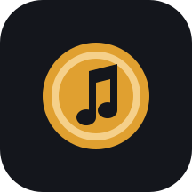
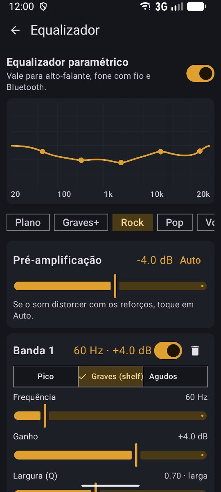

Begood Music Player · Player de música
Suas músicas, do jeito certo.
Player gratuito e sem anúncios para as músicas guardadas no celular: letras sincronizadas, equalizador paramétrico que funciona no Bluetooth, editor de tags com capas, playlists Genius e Android Auto.
Android 8.0 ou superior · Grátis
Está no computador? Aponte a câmera do celular para baixar direto.
Biblioteca
- Você escolhe as pastas que entram; sem escolher, usa a pasta Music do celular e do cartão SD.
- Abas de Álbuns, Artistas, Músicas, Gêneros, Playlists e Buscar.
- Artistas separados por artista do álbum e artista da faixa: participações (feat.) aparecem nos dois.
- MP3, FLAC, M4A, OGG, WAV e outros formatos.
Letras
- Procura nas tags, em arquivo .lrc ou .txt com o mesmo nome e no LRCLIB, com letra sincronizada.
- Também dá para pesquisar no Google, colar a letra e gravar na música.
- Gravar as letras de toda a biblioteca de uma vez.
Editor de tags
- Uma música, o álbum inteiro ou várias de uma vez.
- Artista, álbum, ano, gênero, número da faixa, letra e capa.
- Atualizar pela internet: dados e capa em alta resolução do iTunes e do Deezer.
Playlists
- Playlists suas e automáticas: Favoritas, Mais tocadas, Recentes e Adicionadas.
- Importar e exportar .m3u, inclusive playlists feitas no PC.
- Genius: escolha uma música e o app monta uma playlist que combina com ela, como no iPod, e funciona sem internet.
Modo estudo
- Velocidade sem mudar o tom e tom acima ou abaixo.
- Repetir trecho A/B para tirar uma parte da música.
Bluetooth e carro
- Controles do fone e do carro, título e capa no visor.
- Navegue por álbuns, artistas e playlists no Android Auto.
- O play do carro retoma a última fila mesmo com o app fechado.
Equalizador paramétrico que vale no Bluetooth.
A maioria dos players usa o equalizador do próprio celular, que muitas vezes não funciona no fone Bluetooth nem no carro. O B.M.P faz a equalização dentro do app, então ela vale em qualquer saída.
São até 10 bandas com frequência, ganho e largura livres, filtros de pico, graves e agudos, pré-amplificação automática para não distorcer e presets prontos ou criados por você.

- Baixe o APK
Pelo celular, toque em “Baixar APK” nesta página.
- Permita a instalação
Abra o arquivo e permita “instalar apps desconhecidos” quando o Android pedir.
- Permita o acesso
Ao abrir o app, toque em Permitir para ele ler suas músicas e mostrar os controles.
- Escolha as pastas
Em Configurações, adicione as pastas das suas músicas ou deixe a pasta Music.
Onde fica “instalar apps desconhecidos” em cada marca
- Samsung: Configurações › Aplicativos › menu ⋮ › Acesso especial › Instalar aplicativos desconhecidos.
- Xiaomi, Redmi e Poco: Configurações › Privacidade (ou Proteção) › Fontes desconhecidas.
- Motorola e Android puro: Configurações › Apps › Acesso especial a apps › Instalar apps desconhecidos.
- Escolha o app usado para abrir o APK (Chrome ou Arquivos) e ative Permitir desta fonte. Depois de instalar, pode desativar de novo.
- Se o Play Protect avisar que o app é desconhecido, toque em Mais detalhes › Instalar mesmo assim. O aviso aparece para qualquer app de fora da loja.
Atualizações: Baixe o APK da versão nova e instale por cima. As playlists, favoritas e ajustes continuam.
Dica: Se a música parar com a tela apagada: Configurações do Android › Apps › B.M.P › Bateria → Sem restrições.
O que mudou na última versão.
Todas as versõesO Begood Music Player toca música sem internet?
Sim. Ele toca as músicas que já estão no celular, sem internet. A internet só é usada, se você quiser, para buscar letras, capas e dados de álbuns.
Funciona com Spotify, YouTube Music ou Deezer?
Não. O B.M.P é para os seus arquivos de música (MP3, FLAC, M4A, OGG...) guardados no celular ou no cartão de memória.
O equalizador funciona no fone Bluetooth e no carro?
Funciona. A equalização é feita dentro do app, então vale para alto-falante, fone com fio, fone Bluetooth e som do carro.
Como colocar a letra nas músicas?
Abra a letra em Tocando agora. O app procura nas tags, em arquivos .lrc e no LRCLIB. Depois toque em Gravar na música para ela ficar salva no próprio arquivo.
Política de privacidade.
- Sem cadastro, sem anúncios e sem servidor próprio. Músicas, playlists e estatísticas ficam só no seu celular.
- A internet é usada só para buscar letras (LRCLIB), dados e capas de álbuns (iTunes e Deezer) e músicas parecidas (Last.fm), com o nome do artista, do álbum ou da música.
- Nenhum arquivo de música é enviado para lugar nenhum.
- A chave opcional da Last.fm fica guardada no próprio celular.
| Permissão | Para quê |
|---|---|
| Músicas e áudio | Ler as músicas do celular e gravar tags e letras quando você pedir |
| Notificações | Mostrar a música tocando, com os controles |
| Internet | Letras, capas, dados de álbuns e Genius |
| Tocar em segundo plano | Continuar tocando com a tela apagada e no carro |
Código aberto: dá para conferir tudo isso no repositório no GitHub. Dúvidas ou problemas: abra uma issue.
Ajudou no seu som?
Os apps são gratuitos e vão continuar assim. Se algum faz parte do seu dia, dá para apoiar com um Pix de qualquer valor.

Chave Pix · e-mail
robertobegood+itau@gmail.com
Roberto Santos da Silva
00020126630014br.gov.bcb.pix0128robertobegood+itau@gmail.com0209Cafezinho5204000053039865802BR5923Roberto Santos da Silva6009Sao Paulo62070503***63047463